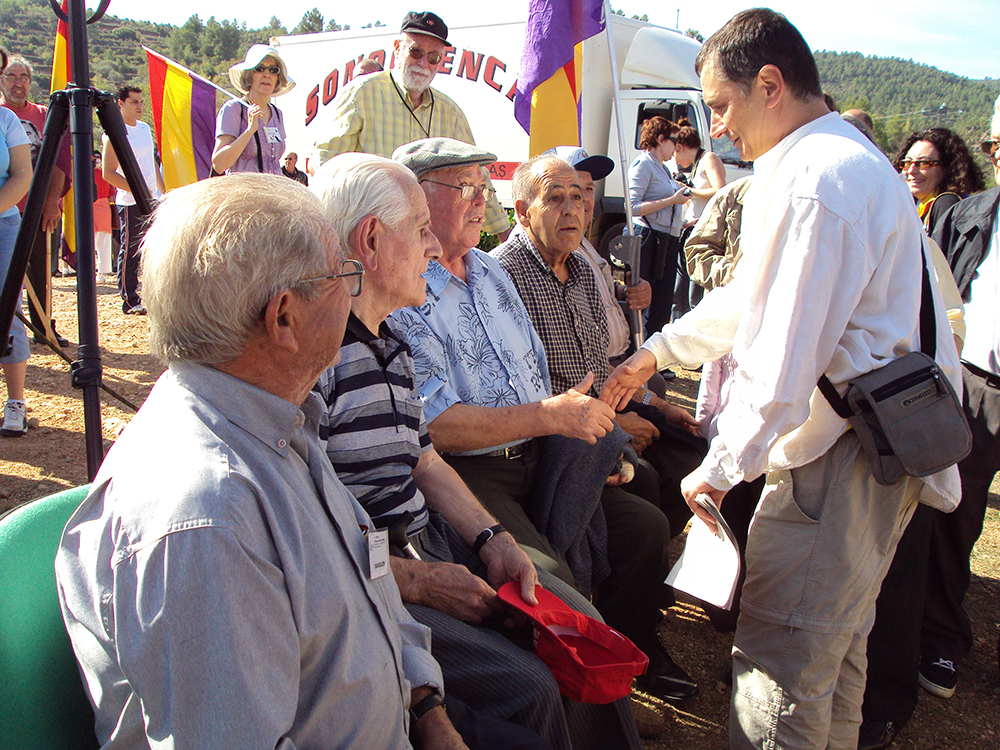
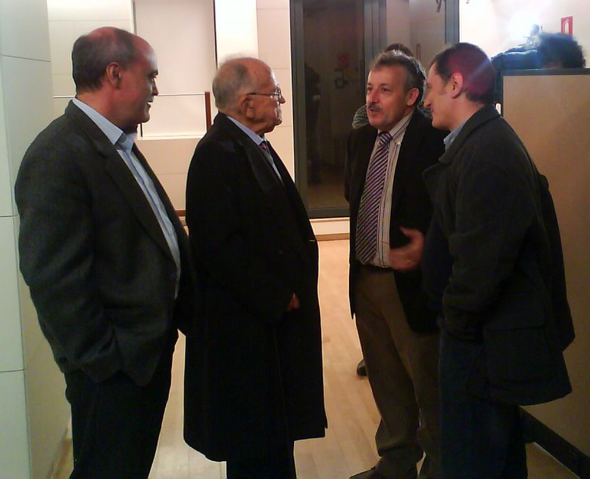
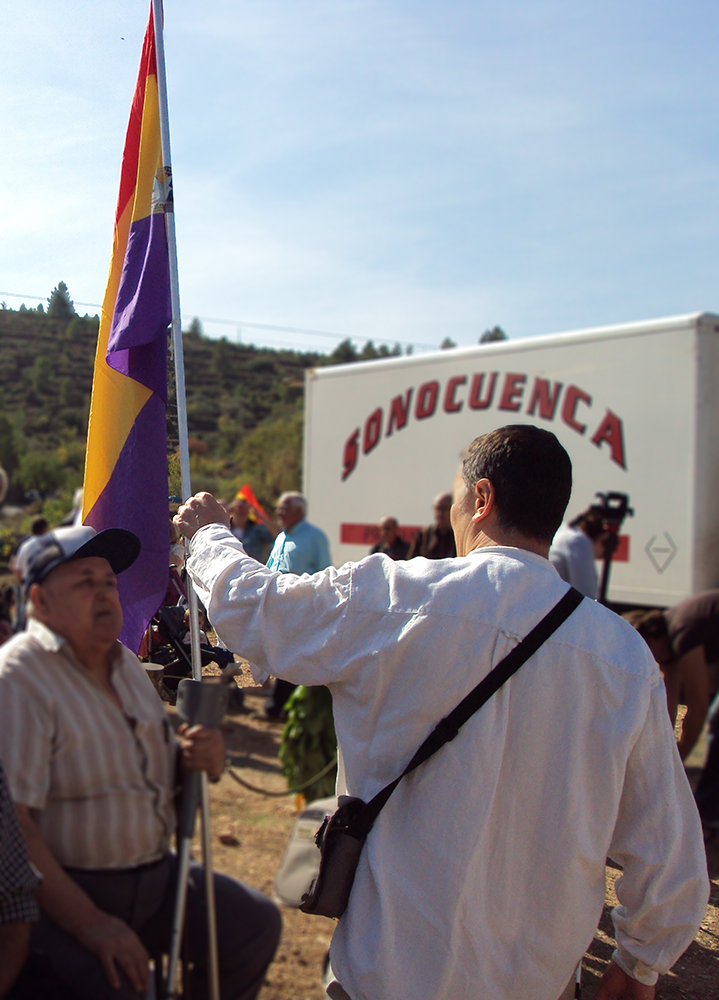

La historia no es tal si no tiene alguien que la cuente. Sobre dicha base, nunca han faltado textos con naturaleza de hechos singulares o de representación total, ni autores para describirlos y analizarlos. La historia de la historia llena estanterías donde se repiten, si no puntos de vista sí nombres y fechas. Es natural. Se estudia y se reproduce.
No lo es tanto que los lugares pequeños, las reducidas comunidades, tengan representación más allá de un mínimo rincón o un nombre de rótulo de calle ajado, a la intemperie de cualquier clase. La de los hielos y la de los deshielos. La del olvido o la de la memoria política y económica selectiva y sesgadora.
Y sin embargo, no hay tanta diferencia. Yo podría explicar perfectamente los modos de vida sin salir del salón de esa vieja casa que cimentaron mis padres y yo reconstruyo, en mi pequeño pueblo de Masegosa. Podría hablar de los hábitos de edificación ligados a la climatología, a los medios de subsistencia, a la prevención de las adversidades, al uso de materiales, a la habitabilidad interna, a su iluminación, a los usos diversos según los tiempos, a su abandono o sobre utilización, y todo ello relacionarlo siempre con lo humano y el paso del tiempo, tan lleno o vacío de enseres. No es otra cosa que historia. En cualquiera de sus ramas.
El ayer y el hoy, el allá y el aquí están llenos de ejemplos. No se trata por lo tanto de ir a buscarlos en cada uno de esos territorios. Más bien de ejemplificarlos en lo próximo y conocido por quien esto escribe. Y así certificar dos cosas a la vez: por un lado la existencia más allá del vacío en nuestros propios ámbitos naturales, y en segundo lugar el valor como modelo necesario de toda lucha por mantenerse en pie a lo largo de una vida y en la construcción de la historia.
Estos breves preámbulos dan pie a un ejercicio de reflexión y relato, sin sorpresas para quien me haya leído en los últimos tiempos, sobre la memoria del maquis en las sierras de Cuenca. En concreto la referida a las actividades del AGLA. Y el motivo no es otro que unir dicho recuerdo a la memoria activa y presente de quien ha sido uno de sus mejores divulgadores, a quien me unió una gran amistad, hasta considerarlo mi hermano, pues él fue el más firme apoyo que siempre tuve en la búsqueda de la identidad narrativa y evocadora de aquellos tiempos, de aquellas gentes. Me refiero al presidente de La Gavilla Verde, a Pedro Peinado, con quien tan identificado me sentí en causa y camino.
Debería descargar estas líneas de emociones y centrarme en el recorrido que me unió a Pedro Peinado y a todos los amigos, socios y colaboradores de La Gavilla Verde durante su mandato, para con ello visualizar los anhelos y las dificultades que conlleva desentrañar unas historias convertidas en leyenda, en documentos casi ocultos, en ruinas de edificios y en sepulturas intencionadamente sin lápida.
Hacia finales de los años 90, cercano al cambio de siglo, yo empezaba a dejar atrás dos proyectos últimos de orientación literaria en los que andaba metido. Uno, la colaboración con el poeta conquense Carlos de la Rica en las publicaciones de su editorial El Toro de Barro con sede en Carboneras de Guadazaón. Su temprana muerte produjo un hueco demasiado sentido sólo recuperado en parte por otros proyectos. El propio sello editorial fue asumido por el joven poeta Carlos Morales pero desplazando la sede hacia tierras de Madrid y con enfoques nuevos. El segundo fue la finalización y cierre de la revista de divulgación poética La Factoría Valenciana tras 37 números en siete años, en la década de los noventa.
Fue por entonces, ya volcado de lleno en estudiar y defender la intrahistoria cultural de Cuenca, cuando se fueron acumulando sobre mi mesa las continuas referencias que se iban produciendo en torno al maquis. Conocía bien los libros de referencia escritos por Francisco Aguado Sánchez, Fernanda Romeu, y un interesante artículo publicado en la revista Olcades. En mi mente estaban los ecos sonoros y casi el ensueño de personajes de los que de vez en cuando se hablaba con recelo o admiración “El Manco de la Pesquera” y “El Capador de Sotos”. Y hasta en mi familia paterna se llevaba con más resignación y mutismo que valentía, a pesar del don de gentes de mi padre, la memoria de la muerte, el asesinato, de mi abuelo Pedro Fernández un aciago día de junio del año 1945.
A nivel nacional era llamativa la recuperación histórica en espacios como Cataluña o León y la publicación de libros como los de Eduardo Pons Prades, Secundino Serrano, Adolfo Lucas Reguilón, o la repercusión de los de Aguado, Cossías y Sorel, sin olvidar la novela de Julio Llamazares, La lluvia amarilla. Pero, sobre todo, dicha visibilidad se empezó a fraguar cuando desde la prensa de Valencia, mi lugar de residencia desde hace más de cuarenta años, se inició la publicación de noticias relativas al homenaje guerrillero en Santa Cruz de Moya, desde el año 1989, de las primeras jornadas celebradas en el año 2000, y la edición de la novela de Alfons Cervera Maquis en el año 1997, a varias de cuyas presentaciones asistí. Además, en estos inicios tampoco faltaron los ecos y sus repercusiones de la preparación de la película de Montxo Almendáriz, Silencio Roto al fin estrenada en el año 2001.
Por esas fechas, no podría saber el año con exactitud, y ya metido de lleno en recopilar datos y bibliografía referentes al maquis, fue una oportuna conversación con un amigo, Alejandro, natural de San Martín de Boniches, lo que me impulsó a dar un paso más en mi acercamiento al tema histórico. “En mi pueblo vive un maquis, Emencio Alcalá”. Su mitología ya estaba más que subrayada en mi ejemplar del libro de Fernanda Romeu: La Agrupación Guerrillera de Levante (1987). A través de muchas visitas pude acceder a las memorias de “Germán” que se publicarían en el año 2002. Pero para poder transcribirlas y anotarlas, y hasta visualizarlas en fotografías, por cierto que pagué bien caras, (y que como único comentario quiero dejar aquí constancia del gasto, también económico, que toda esta investigación ha supuesto, sin ninguna ayuda jamás de ninguna administración), hube de adentrarme en el camino de la historia y retomar mis nunca perdidos hábitos de investigador, aunque hasta entonces aplicados al género de la biografía literaria con varios trabajos realizados y editados sobre lo mismo. Los archivos y hasta las conversaciones fueron desde entonces mi día a día. Y lo fueron por la propia condición de la semblanza que estaba tratando.
Me explico. Me encontré con un tema del que no sabía apenas nada. Y del que ni en Valencia ni en Cuenca había ninguna publicación de referencia excepto las apuntadas y, es de ley decirlo, un desnaturalizado libro del motillano Ernesto Cuellar, sobre “El Manco de la Pesquera” (1998). Lo leído y lo oído (lo cual no es imprescindible para hacer arte, el auto didactismo siempre ha existido, y de qué manera). Pero que me eran tremendamente próximos: Personas, lugares y tiempo histórico. Donde casi todo estaba lleno de nebulosas. Muchos nombres iguales, historias a medias voces y con relatos contradictorios, errores que supe intencionados, pocos rostros, muchos familiares, demasiados documentos sin cotejar y, aun sabiendo de su existencia, sin poder consultarlos de una manera satisfactoria. El libro de Emencio Alcalá “Germán” (Memorias de un guerrillero), a pesar de su sencillez, fue todo un reto y un revulsivo. No fue nada fácil armarlo de sentido. Transcribir nombres, ponerles apellido, visitar la geografía de las montañas, molinos, rentos o ríos transitados y comprender el valor de la lucha, reescribir las equivocadas lecturas de otros historiadores. Pero además, con el libro de “Germán” tuve ocasión de llegar a otros textos semejantes como los de Juan Hueso “Casto” (Informe de guerrillas, 2003), el entrañable Félix Pasarón (Memorias, 2007), o las más que interesantes de Carlos Blanco Manso “Pepito de Guadalajara”, estas últimas editadas en la revista digital Entremontes. También me sirvió para adentrarme en la propia condición personal de muchas biografías, y en mi ánimo sigue estando el de intentarlo con todas y cada una de ellas. Y de nuevo empezaron a surgir preguntas, estas ya de más hondo calado y de imposible respuesta, aunque no faltas de descripción.
Lo normal, por tanto, con este mínimo pero ya encaminado bagaje, fue que asistiera no a las primeras jornadas pero sí a las segundas y al acto de homenaje de ese año. Desde entonces no he faltado a ninguna convocatoria. Y lo que es más destacado, desde el tercer año casi siempre he participado en las mismas, como ponente o presentador. Y no lo digo como mérito, sino con orgullo, agradecimiento y responsabilidad. Y son términos que no quisiera dejar pasar por alto. Todos y cada uno de ellos tienen su motivo. Y a ello voy.
Orgullo, sin duda. Que gente de lo común, tras una perdida guerra civil de tres años, retome las armas durante más de ocho, a sabiendas de la utopía de la misma y bajo mínimos de cobertura personal, es algo aleccionador. Sobre todo porque su proyecto no es la imposición, sino las libertades ya conocidas, conquistadas y vividas. Sin olvidar que todo ello se hizo en duros apriscos de inclemencia. Desde el monte, cual Viriatos de los siglos modernos. No rendirse ante la opresión. Pero además, el relato de tantas dificultades, tampoco puede dejar de lado a todos aquellos que irremediablemente se beneficiaron de la represión, para que algunos ADN no se desnaturalicen, como tampoco el de quienes simplemente se vieron abocados a tal coyuntura, pues los propios usurpadores les habían puesto contra la espada y la pared de la supervivencia, social y económica.
Agradecimiento, de vida: Es inusual en la historia moderna poder reconstruir un periodo de la misma teniendo a mano a los propios protagonistas. Pudo hacerse con la guerra civil. Testimonios y memorias de sobra los hay, sin embargo el largo periodo de censura, control y represión franquista cercenó y podó en muchos casos esta posibilidad. Además, la apabullante documentación oficial tejió un consenso del olvido o improvisó discursos sobre lo innecesario con respecto a los testimonios orales. Obviamente como auto excusa de culpa. Algo de esto puede aducirse sobre la lucha guerrillera antifranquista. Sin embargo, la más cercana inmediatez, el parco y dificultoso acceso a la documentación han hecho más necesaria y hasta imprescindible la descripción de dicha etapa histórica con los recuerdos orales y hasta la presencia de los protagonistas, tanto directos como indirectos, en la reconstrucción de los hechos y en las directrices de los mismos. A este respecto yo he tenido la suerte de contar con un sin número de personas que me han ayudado, y que sólo a modo de ejemplo, amplio, pero ejemplo, ahora quiero nombrar: los guerrilleros Florián García “Grande” y su esposa Remedios Montero “Celia”, Esperanza Martínez y sus hermanas Amadora y Angelita, Adelino Pérez “Teo”, Pedro Alcorisa “Matías, Gonzalo Cuallado “Angelillo”, Pepe Navarro “Andrés”, Fructuoso Soriano “Ricardo”, Roberto Álvaro “Ceferino”, Fernando Escrivá “Juanito”, Juan Antonio Magraner “La Llave”, a “Peñaranda”, “Larry”, “Rubio”, Eulalio Barroso, y José Moreno Salazar, a Esteban Garví, a Paco Molina y la familia de La Madre en Cofrentes, a Aida, Lara y Reyes, las sobrinas y nietas de Vicente Galarza y Peregrín Pérez en Buñol, como en Requena, en Los Isidros, de Casa del Valiente, de Jaraguas, de Nieva, de Sinarcas, a Julia Gómez, y con tanto cariño como a los citados a los amigos de La Pesquera y los familiares de Basiliso Serrano, en especial a Óscar Serrano, a Antonio Alpuente en El Cuervo, a los hijos, en especial Dionisio, del “Viejo” de Gúdar, a la familia canaria de “Rodolfo”, José Manuel Montorio “Chaval”, he de citar a Carmen Martínez, a Rufino, a Pasarón, a Cotillas, a Labatut, Marcos Arcos y a los familiares de Marcelino “Segundo”, en especial su hermana Pilar, a mis amigos Puri y Manolo, Eulogio Rodríguez; o al hijo de “Pepito de Guadalajara” que me facilitaría la memorias de su padre. También a “Geromo”, a los hijos de “Tomás” de El Picazo, al propio “Tomás” de Altorricón, a la familia de “Capitán”, a la hermana de “Pepito el Gafas”, de “Casto”, de “José María”, de “Rufino”, de “Ramiro”, “Flores”, “Chatillo”, “Loreto”. Y no me olvido de uno de los jefes de la expedición de José Gros, a “Sebastián”.
Responsabilidad, en origen: El trabajo intelectual o manual, de obrero o de ingeniería, se desarrolla siempre en función de las circunstancias. Y la principal es la presencia del ser humano. Por pura lógica donde más densidad de población hay y más tradición de haceres más fácil resulta llevar a cabo cualquier empresa. Pero desde la parquedad el reto es casi imposible o de titanes. A este respecto, cuando en la bibliografía sobre el maquis se mira hacia fuera, en los inicios de mis trabajos, apenas existía nada de consideración editado en la provincia de Cuenca, y eso que su peso en la lucha fue considerable. Decenas de historiadores salían licenciados anualmente de las distintas universidades valencianas y madrileñas, con miras en la mayoría de los casos hacia la reinversión productiva en su ámbito más cercano. No es el caso de Cuenca. Y es por ello que los que allí tenemos el origen nos hayamos de aplicar de alguna manera más que propia a revalorizar lo común, aunque sea como ancestros que aparentemente ya no dicen nada. Y sin deseos de medallas. Por mera sintonía y orgullo.
Por si fuera poco, esta ductilidad de lo cercano, con el tiempo, me he dado cuenta que sobre el tejido de análisis del maquis es lo que prevalece. Compárese sino el origen o la vecindad de los autores de la inmensa mayoría de los textos que tratan de la guerrilla antifranquista y el espacio descrito. Y esto, en ningún caso, se comenta demérito, sino como circunstancia de la historicidad de esos tiempos y en este tema especialmente. Seguramente ello conlleva que la inmensa mayoría de los libros publicados sean en editoriales pequeñas y con ediciones reducidas. Pero ahí están, y no resulta nada difícil poder adquirirlos. Precisamente esa cercanía es la que repele a las universidades. No han sido los Departamentos de Historia Contemporánea los focos dinamizadores de estos estudios. Más bien se han limitado a bibliografiar el franquismo con sentido general, o a la guerra civil en cualquiera de sus facetas. No merece la pena arengar contra este extraño olvido. Tarde o temprano el maquis tendrá que ser una lección imperativa de sus estudios. Y para su fortuna, su historia ya la tendrán escrita.
Con estos tres espejos: orgullo, agradecimiento y responsabilidad inicié ya de lleno el camino de investigación y unos años más tarde el de escritura detallada. Y es aquí donde surge para mí fortuna la compañía imprescindible, e irreparable tras su adiós, de Pedro Peinado.
Tenía ese porte de sencillo y caballero. Un aire de utopía, algo común al hidalgo que conquistó el mundo con sus locuras y sus palabras. Buena gente. Lo veías acercarse con cadencia y sonrisa. Los brazos abiertos para el saludo. “¿Cómo estás?”, te preguntaba siempre, mirándote a los ojos, esos ojos con pátina de brasas cálidas, y sintiéndose agradecido. El tiempo se paraba. Su voz sonaba a temple de familiar recuerdo, algo parecido al instrumento que inmortalizó Pau Casals. No era muy alto, tampoco yo. La verdad es que en Cuenca nunca lo hemos sido, salvo las generaciones actuales, más desposeídas de la dieta serrana o manchega. Comida de labor y sesteros entonces. En nuestros encuentros, casi siempre estaba ocupado, la acción era su naturaleza, y la clarividencia para llevar a cabo su recorrido. Entre huecos seguíamos los hilos de los temas del momento: todas esas preocupaciones para armar el amor, por su tierra y sus gentes. Y no desde la añoranza, sino con proyectos reconocibles. Luchó por ellos, y lo posible fue su carta de presentación. Fue fácil entenderse, como hermanos. Desde el primer día, y todo por obra y gracia suya.
Santa Cruz de Moya surge como el espacio de encuentros, conocimiento y acción. Resultó, y sigue siendo ahora bajo la presidencia de Adolfo Pastor, el mapa mural de la reconstrucción de la historia del maquis con carácter nacional e internacional. Todo un ejemplo de mímesis que bien pudiera extenderse, como así ha sucedido, no sólo por lo que concierne a esta parcela de análisis histórico, sino a otras muchas con el mismo contenido. Revisar la historia más inmediata a las personas y a los ámbitos rurales y dimensionarlas bajo valores democráticos para proyectarlas como foco de vida y convivencia. Nada menos que asentar el orgullo y la dignidad como forma primaria de habitar los pueblos. Y a partir de aquí defender los derechos de uso básicos: escuelas, atención sanitaria, microeconomía, etc. Esos grandes premios que se dan a las labores sociales parece que sólo se miran en los espejos de la prensa financiada por los bancos que desahucian. Una inmensa pena.
Este valor de espacio activo, resulta más sorprendente al tanto que valioso, por el lugar y por la forma de llevarlo a la práctica. Santa Cruz de Moya y la asociación La Gavilla Verde. No es fácil, nada fácil, para quien conozca un poco los devenires y tiempos pretéritos de una provincia como Cuenca, encontrar lugares, momentos u organismos, públicos o privados, que desde la independencia creen anualmente espacios de reflexión histórica con un talante abierto y clarificador. Trasladar este fenómeno de activismo público a otras provincias como Barcelona, Madrid, Valencia, resulta fácil y cómodo, pero darle cuerpo, contenidos y credibilidad en una pequeña aldea muy alejada de la propia capital de la provincia y en semi despoblación permanente es para quitarse el sombrero. Y desde luego, para, a pesar de las críticas que puedan surgir, alimentar su pervivencia de manera continua. Y este dogma, lo entendí desde el primer día, y me lo he aplicado siempre, desde entonces. Fidelidad que asimismo se puede alimentar con el propio contenido temático de su base: la lucha guerrillera en la España franquista. Lamento, por lo tanto, que haya habido buenas personas que, no por salud, sino por carácter y orgullo, o por mera ignorancia generalmente política, no hayan tenido una visión tan solidaria. Pero es de humanos errar.
Los dos símbolos sobre los que se ha cimentado el trabajo de Pedro Peinado y La Gavilla Verde, así como el de varias asociaciones memorabilistas, han sido y sigue siendo, el monumento guerrillero erigido casi a las puertas de su municipio y las Jornadas surgidas a su resguardo. De ambos contenidos hay sobrada referencia en la página web de la propia Gavilla Verde. En numerosas ocasiones se ha aludido a todas las circunstancias, y a las personas que hay tras ellas, que posibilitaron que fraguase la materialización del monumento a la guerrilla en los aledaños de Santa Cruz de Moya: Romeu, Pelayo, Isaías, Antón, Córdoba, las Amicales de Barcelona, AGE, AGLA, y su motivo: la muerte de 12 guerrilleros en Cerro Moreno el 7 de noviembre de 1949. También, la decisión de recordar su lucha, tanto en Francia como en España, el primer domingo de octubre de cada año, y ya en el 2015 celebramos el 27º aniversario, entonces, y lo digo como referencia kilométrica, recién nacidos mis hijos.
Fue en el año 2000 cuando se celebraron las primeras jornadas. La Gavilla Verde como colectivo de Santa Cruz se había unido en preparativos y afectos de la celebración ya en marcha del Día del Guerrillero. Pero en este año, con el equipo directivo de Fernando Antón a la cabeza, donde creo que ya figuraba Pedro Peinado, se pusieron en pie. En ellas ya se vislumbraban los cánones de planteamiento: escritura, testimonios e imagen. E incluso su empatía con los principios y las bases del ideario gavillero. Ilusión que fructificaría en rutas o senderos de memoria, en concurso narrativo donde se sigue homenajeando a una de los pilares nacionales de las Jornadas como fue Dulce Chacón, en documentales, o en otras líneas activas tan solo atemperadas por la crisis económica y los atrincherados recortes que se auto justifican –y se auto califican-, como son las líneas de las exhumaciones o la del centro de documentación.
Como dije, ya en las segundas debió ser mis inicios en el trato y el afecto con Pedro Peinado. De hecho ya en las terceras (2003) figuro doblemente en su programa: presentando el libro de Emencio Alcalá, que me acompañó, y en una mesa de estudio junto con Diego Carcedo, Carles Llauradó, Florián García “Grande”, Remedios Montero “Celia” y Juan Magraner. Mis citas pueden encontrarse en las páginas de la web de La Gavilla Verde. A ellas remito.
En el año 2005, asistimos, y en mi caso como apoyo convencido, a uno de los momentos más críticos en el devenir de Jornadas y Homenaje. En este caso, en un comportamiento casi surrealista, se llegaron a realizar dos convocatorias. Por fortuna y buen temple lleno de lógica humana y política las aguas volvieron a su cauce. De todo ello hay un gran artículo reflexivo de Pedro Peinado, “La memoria dividida”, que bien puede dar pie para recoger todos sus escritos en un libro. Fueron los años de presencia e impacto de José Manuel Montorio. El monte tornó a vibrar con su músculo de oratoria y convicciones. Muy pocas personas con su edad, en los tiempos últimos, han sabido mantener el honor que tanto proclamaron los barrocos españoles. Aquellos que aún estudiamos como los habitantes del Siglo de Oro.
En la convivencia de un pueblo no son baladí las conversaciones de bar, los saludos a pie de calle o en los entreactos de cualquier cita. Y en este caso, todos estos intermedios se llenan de saludos, recuerdos, notas, teléfonos y aires de nuevos caminos. En más de uno se imaginaron las propuestas que luego, poco a poco se irían desarrollando a lo largo del año. El mundo, entonces, de las amistades se fue ampliando con nuevos amigos, familias, lugares por recorrer, llamadas que perder en los hilos de la luz: Julián, Fernando, Ángel, Rosa, Ángela, Teo, Vicente…
Varios son los recuerdos personales que en este momento quiero traer a colación. Seguramente todos ellos al abrigo común de los dos tomos de mi libro Los guerrilleros de Levante y Aragón editados, el primero, en el año 2006 y el segundo en el 2008. Y el libro más veces presentado en las Jornadas, al menos en tres ocasiones. (Que bien se lo merecía, pues son dos extensos tomos editados en años casi consecutivos). En el proceso de investigación, escritura y presentaciones, como señalo, siempre conté con la ayuda inestimable y destacada de Pedro. Los hilos de la escritura dieron pie a un completo o al menos complejo nudo de acciones relacionadas con la propia historia narrada, vivida y recuperada.
Aquellos caminos de herradura, donde, en época de las bodas de nuestros padres en la prensa del Movimiento, Ofensiva, se escribiese que “no habían pisado en la vida las ruedas de un coche, aunque sí, repetidas veces las pezuñas rojas de un bandolero”, me llevaron a pueblos semi abandonados, a campamentos ocultos, a recodos de caminos, masías, molinos... No es cuestión de citarlos. Pero sí que recuerdo un viaje con Pedro y otros amigos a Higueruelas, Casas del Marqués, Bercolón. Yo ya había visitado la aldea de Higueruelas y en mi inconsciente vital, tras algunas charlas previas con Pedro Alcorisa, hicimos un viaje acompañados por el propio “Matías”. Habían reconstruido algunas vivencias de una aislada y pequeña población. Su soledad, sin embargo, seguía siendo casi la misma, incluso ahora, agravada por la emigración a las grandes ciudades. En el entorno de estas dos aldeas se asentó la guerrilla del AGLA. De aquí surgieron sus primeros enlaces y al poco guerrilleros. De aquí eran “Simón”, Manolete”, “Matías”, “Genaro”, y todas sus familias. En mi ensueño, al ver aquellas ruinas, quise imaginar los modos de vida, humildes, de personas como las madres y las hermanas de los guerrilleros citados. Refugiándose en la noche para poderse ver y acariciar, y hasta engendrar hijos. Peleando con el tiempo para evitar contrariedades, caminando hacia Graja de Campalbo para comprar útiles de vida o resistencia. Tiempo después volveríamos por el traslado de los restos de “Manolete” y algún más que merecido y digno homenaje.
A Cerro Moreno también subí en compañía de Pedro, Adolfo y Teo entre otros amigos. Fue otro de esos momentos únicos. Se trataba de acceder, en mi caso, por primera vez al espacio casi mítico de la lucha guerrillera de Levante. Fue más que emotivo. Yo, que he vivido muchos preámbulos de la ansiedad, del nerviosismo creativo o emocional previo y posterior a cualquier momento imprevisible, pero en espera y madurado como positivo, no dejo de removerme de mi asiento cuando todavía hoy recuerdo ese día. Es lo que tiene la geografía de la ruina, o del abandono, sus fantasmas vivos, sus sueños perceptibles no tienen descanso. Como esos monjes templarios de Bécquer que siempre vuelven al alma y la animan y anidan. En Cerro Moreno en el mes de noviembre de 1949 habían fallecido 12 guerrilleros. La circunstancia, ampliamente estudiada, y por mí enumerada, supuso en antes y un después en la táctica de lucha. Pero Cerro Moreno, además de hecho relevante, también implica una suma de acontecimientos previos, de geografía bien trillada, de vivencias a flor de piel. Habría que recordar, porque el sendero lo habilita, Las Rinconadas, el caserío de Orchova, el río de Arcos, más de una tenada, algún campamento de antaño, y todo el horizonte como una esperanza. Así, entonces, y en el ánimo del recuerdo vivo ahora.
Otro motivo de nuestros encuentros fueron los actos relacionados con una de las vías de trabajo más necesarias del momento: la de las exhumaciones. En especial quiero comentar, ahora, tres de ellas. Las referidas a Fuertescusa, a Azuara y los actos de Monroyo, pues tienen un alto poder significativo y de alguna manera fueron marcando las pautas de acción y superación tanto en el esfuerzo de dirección de Pedro Peinado, como en la coordinación de manera acertada, en cercanía, tiempo y profesionalidad de Adolfo Pastor. Aunque no fue mucha, ni lo más necesario e importante, algo de continua y diversa ayuda pude proporcionar.
Mi participación en la búsqueda de los restos de “Domingo” (Eusebio García Martínez), natural de Salinas del Manzano, comenzó el día que conocí a su hermano Rufino y a su familia. Rufino García era el pequeño de los tres hermanos. El segundo, Ángel, también sufrirá la lacra de la ley de fugas por ayudar a “Domingo”. Tal vez la suerte de Rufino fue la de contar apenas con unos pocos años cuando se produjeron los hechos que diezmaron a la familia y asentaron en él el espíritu indomable, desde el silencio de las sierras, para no olvidar y recuperar la dignísima memoria democrática de todos sus apellidos. No sé si fui yo, pero sin duda sí que le ayudé a situar la muerte de su hermano en Fuertescusa y despejar sus dudas sobre la relación más que habitual entre las actas de defunción municipales que solían desdibujar el nombre del fallecido, pues desconocían su nombre, y siempre lo reflejaban como “un bandolero”, por imperativo legal. Porque a este respecto he de decir que en cualquier exhumación el paso primero es el de documentarse, y a en las exhumaciones del AGLA, mi libro, que no mi consulta, ha sido la base de muchas de ellas. Pero volviendo a “Domingo”, había muchos datos que corroboraban tal relación. La Gavilla Verde, y Pedro a la cabeza, se enamoraron de la importancia de la historia de Rufino, además relacionado con el también guerrillero Julián Ramos, del propio Santa Cruz de Moya. El mismo Pedro Peinado, que llegó a escribir un esplendido artículo, hizo que se pusieran en marcha los mecanismos forenses de exhumación. Fueron muchas conversaciones para afianzar el convencimiento y abrir la esperanza a uno de los mayores luchadores por la memoria histórica. No hubo problema en hallar su cuerpo y realizar las pruebas de ADN. La pena fue que estas se alargaron más de lo pensado y lamentablemente hubimos de asistir no a unas honras fúnebres sino a dos. Las de “Domingo”, donde leí el poema de Cernuda “1936” en el humilde cementerio de Salinas, y un poco antes la del propio Rufino, por lo que no pudo cumplir en persona su sueño. Pero como todos los cementerios de los pueblos serranos con tapias medianas de argamasa o cal, con nichos en el suelo y flores de plástico, con caminos de tierra y algún rosal al lado de cruces antiguas, siempre vela un silencio que acuna más que sobrecoge el mañana de los que tuvieron un sueño. No hubo justicia divina, pero al menos los humanos, los amigos de Rufino, su mujer y sus hijos, siempre estaremos a su lado. Y así le acompañamos en este viaje y recordamos todo su hacer para estímulo y tareas siguientes, enamorados de su ejemplo. Y que no se olvide y cunda.
A Azuara (Zaragoza) llegamos un día de primavera. Los buenos amigos de la asociación cultural del pueblo alentaban la recuperación de la memoria de uno de sus más admirados paisanos: Doroteo Ibáñez Alconchel “Ibáñez”. En varios momentos de jornadas y relatos orales su nombre surgió con determinación de aureola y casi leyenda. Fueron y fuimos aportando datos sobre su vida de republicano, volcado en una causa que no era suya, pero que por imperativos de dignidad terminó siendo la de todos. Varios de los ancianos guerrilleros supervivientes tenían muchos recuerdos de él. Florián García o Remedios Montero, matrimonio de exguerrilleros, lo recordaban con cariño y respeto. Su final no dejaba indiferente a nadie. Todo un trabajo de indagación llevó a los jóvenes de “Fendejo” a intentar recuperar los restos de “Ibáñez”. Supimos que había sido el último fusilado en Paterna, de los guerrilleros de Levante. Tres juicios le habían llevado a sufrir la condena a muerte. Lamentablemente, aunque casi llegamos a contactar con algunos de los últimos enterradores, no fue posible localizar su tumba. No constaba en el acta de defunción. A Azuara pues, fuimos con su nombre y su recuerdo. Con Pedro coordiné mi presencia donde biografié a Doroteo. En el pueblo conocimos su casa, las cercanas de Belchite, a sus descendientes. La jornada fue de recuerdo vitalista. Un último homenaje, con lápida de memoria en el cementerio, congregó a un nutrido auditorio. En mi coche pude llevar a Reme y Florián, también a José María Azkárraga. Paramos en Caudé e hicimos alguna foto. Todavía por esas fechas, de lleno en mis investigaciones, imaginé que la estación del ferrocarril era la misma que en 1946 tomaron los guerrilleros. Pero estaba equivocado como más tarde comprobaría.
En las tareas de exhumación de Monroyo fue Adolfo Pastor quien llevó a cabo todo el sinfín de tareas con las trabas, los contratiempos e incomprensiones puestos por el ayuntamiento de entonces. Quien haya seguido el devenir de las actividades de La Gavilla Verde está sobradamente al tanto pues desde sus mismas páginas y hasta en la voz del propio Adolfo se han narrado. Mi presencia allí, junto a Pedro, fue como complemento a muchas de sus iniciativas. Lo mismo podría decir de las charlas en Benajéber; en La Pesquera, algunas de Buñol, en Bezas, Torrente, Albal, Monserrat, en Teruel, en Cuenca, Cañete. Los pequeños actos de rehistorización suponen un modelo de justicia, una declaración de convicciones y un acto de pundonor. Para las gentes sencillas, al territorio es su feudo. Sin apego al dominio, sino a la lucha diaria, pues nada se les dará por don sino por conquista. A pesar de los pesares, a pesar de que cada uno sea el sujeto, en buena media, de su propia historia.
Con lo amigos de La Pesquera, María Jesús y Oscar Serrano, y al tiempo de los cincuenta años del fusilamiento de Basiliso Serrano Valero “Fortuna” o “El Manco de La Pesquera” se realizó el traslado de sus restos desde cementerio de Paterna. Fue el día 10 de diciembre del 2005, tras las palabras de uno de los mejores alcaldes de dicha localidad, el socialista Betoret, a quien le agradezco que me citara, pues ya para entonces yo tenía muchas paginas escritas sobre el maquis, “el Manco” y la Memoria Histórica, se procedió a la apertura del nicho. Cincuenta años justos después de su fusilamiento. Familias y amigos nos hallábamos presentes. Para mí fue y sigue siendo uno de esos mágicos momentos, emotivo y “viral”, que ahora dicen los de las nuevas tecnologías, de mi transitar por los espacios de la recuperación histórica. Recuerdo el halo de morbo, de seriedad, de respeto, de admiración, de empatía, de algo parecido a la fuerza, a la voluntad y al deseo de llanto eterno en la atmósfera que allí se respiraba. Las botas resecas por la soledad, los huesos duros y de respeto, la madera de crudo y humilde pino podrida, un hueco sepulcral del tiro de gracia y el vacío tan lleno de fortaleza de aquel sencillo nicho 475. Era “El Manco”, “el Cervantes”, “Prim”, uno de los “Enriques” de la era victoriana convertido en tragedia clásica. Cada cual tiene sus modelos.
Aunque ya he escrito bastante sobre Basiliso Serrano Valero, no me resisto a añadir nuevos comentarios al hilo de este artículo. Al mirar atrás y personalizar la historia de Cuenca, en su dimensión social, que no deja de ser la histórica, no se me ocurre otro nombre que mejor simbolice la historiografía de su siglo XX. Su figura, me parece, la del personaje más importante de la semblanza social y política de Cuenca en el siglo pasado. Y seguro que no meramente por sus méritos ni tan siquiera por su propia historia. Sino por todo ello junto, unido a las circunstancias en que se desarrolló su vida y destino, y por la propagación como leyenda de su figura durante las décadas posteriores. La reconstrucción de la lucha por las libertades y por la dignidad humanas, en definitiva, no es cosa simple, y menos en los tiempos autoritarios, aquellos que le tocó vivir a Basiliso. A su lado hay otros nombres importantes, como el de “Segundo”. Pero encontrar uno donde se aúnen con todos los recodos de sombra que se quieran, tanto vida, lucha, tragedia, independencia y leyenda es imposible. En él se concitaron, y si además a todo ello se le une su condición de clase humilde y mermas físicas, el prototipo queda sellado como efigie de recuerdo, alabanza y respeto. No me cabe ninguna duda. Y por eso, los que lo propiciamos, apoyamos, continuamos, como bajo el rótulo de esta sede de internet “elmanco.es”, lo realizamos con el mayor aprecio, seriedad y fines equiparados al sentir y el hacer de Basiliso en sus mejores momentos.
Pero volviendo al hilo conductor de estas páginas, fue, sin embargo, un viaje con Pedro y con José Manuel Montorio “Chaval” desde Santa Cruz a hasta Caudé, ida y vuelta, lo que más vivencias me aporta a la hora de trazar estas líneas.
Durante una temporada, y tras regresar del exilio de Praga (1952-2005) Chaval estuvo alojado en Santa Cruz de Moya. Desde allí hizo varios recorridos con los compañeros de La Gavilla Verde, reviviendo, pues él así lo sentía, los espacios de acción de su tiempo en la AGL. También en uno de sus viajes a Valencia (una semana en casa de Florián y Reme) yo le acompañé a Buñol, y junto con Florián y Reme a la Casa de la Madre. Pero en esta ocasión, me trasladé desde Valencia hasta Santa Cruz de Moya. Un tiempo antes le había hecho otra visita acompañado de mi malogrado hermano Paulino. A eso de las diez de mañana emprendimos ruta camino de Torrijas. Recuerdo que viajamos en el todoterreno de Pedro. Hicimos varias paradas a petición de “Chaval”. Escrutaba el paisaje, alargaba su vista ondulándose hacia las cumbres de Javalambre, sorteaba su visión los caminos invisibles del recuerdo, los tapiales de añoranza, perdón, de confianza, pues jamás hubo añoranza en “Chaval”, recorría de memoria lo que los neumáticos y los cristales avanzaban, su mente estaba más allá de un cómodo asiento interior, ajustaba planos, reforzaba autobiografía. Sus neuronas sobrevivían en guardia permanente.
Más bien con lentitud recorrimos entre almendros los kilómetros que median desde Aras de los Olmos a Torrijas, con paso intermedio por Losilla y Arcos de las Salinas. Eran pueblos irreconocibles para “Chaval”. Desde su hábitat de noches guerrilleras en la segunda mitad de los años cuarenta apenas si recordaba sus mortecinas luces y sus siluetas. Y la luna. Además, como bien es perceptible, se han construido nuevas casas y grandes naves con materiales de hierro y hormigón. Ya casi nada queda de los tapiales derruidos y los pajares de rebaños con jóvenes pastorcillos apacentando un puñado de ovejas. Tampoco se olvide que su territorio más habitual había sido los entornos de Cofrentes.
El verdadero motivo para llevar ese trayecto era localizar el enclave del Molino del Peinado. En los primeros momentos de la guerrilla de Levante había sido un punto básico para conseguir suministros. El grupo de “Ibáñez”, desde su campamento de Camarena, lo había frecuentado de manera habitual. Y Montorio había sido uno de los jóvenes guerrilleros que un trato más estrecho y personal había tenido con sus moradores, en especial con la hija, con quien volvería a reunirse muchos años después, tras esos días de su regreso de Praga. Ambos ya cargados de años, pero también de vitalismo. Es conocido el aciago final de la historia de los moradores del molino, con la aplicación de la funesta y extrajudicial ley de fugas al padre y al hijo, ambos de nombre Antonio Delgado, junto al grupo destacado de enlaces de la sierra de Camarena, en Segart (10/4/1947).
Para localizar el Molino, uno de aquellos lugares un tanto de geografía agreste, con riachuelo más que estacional en sus orillas, teníamos como referencia el río y unos peñascos cercanos, que recordaba Montorio. Con todo nos acercamos hasta Torrijas donde paramos y preguntamos a un anciano que ya tomaba el sol a la entrada del pueblo. Nos confirmó el punto exacto y volviendo sobre nuestra ruta dimos con el emplazamiento. No resultó difícil. En una curva cerrada y con la carretera recortando una gran mole se hallaban los restos de lo que antaño fuese el molino. Pero lo cierto es que no se encontraban a la vista del conductor. Hubo que aparcar el vehículo en una explanada próxima, y andar bordeando el río y atravesando un cerco de piedra, subiendo una pequeña loma y recorrer lo que en su tiempo pudo ser el canal de conducción de agua. Todo lleno de matojos y abandonado. Al poco pudimos dar con unas paredes en ruina, restos de tejas y vanos vacíos. Llamaba la atención lo reducido de algunas habitaciones y la pared encrespada junto a un riachuelo con apenas agua. Al otro lado la ladera ascendente del monte, y el pinar. Recuerdo los ajetreados pasos, a pesar de la dificultad del tránsito, de “Chaval”, su desconcierto por no poder determinar el perfil exacto de sus recuerdos, y a la postre su aceptación del emplazamiento. No hubo más detalles de su recuerdo que el de simplemente señalarnos el punto desde donde vigilaban la casa antes de acceder a ella con la seguridad de que no estaba vigilada por la guardia civil. Yo intenté sorprender alguna vía de escape, esos reatillos que como sendas trazan los animales en el monte, esa vía secundaria por donde él, en su tiempo, se deslizara, pero no hallé en su mirar esa búsqueda pícara, otoñal y risueña. Los caminos de la añoranza en “Chaval” ya estaban escritos, en sus grandiosas memorias, claro. Un monumento para cualquier historiador.
Desde el Molino del Peinado seguimos ruta hacia las cumbres de Javalambre. No teníamos previsto acercarnos hasta el campamento de Camarena. Pocos días antes ya lo había realizado Montorio con otros amigos de La Gavilla Verde. Atravesar Javalambre fue también otra experiencia sin olvido. La mirada oteadora de “Chaval” recuperó lejanas formas de antiguo guerrillero. Inquieto, vivaz, atento, no dejaba de escrutar cada ladera, regato, matojo, sabina, camino. Pero Javalambre, según ascendíamos y desde su cumbre, era un espacio lunar. Enebros rastreros que moteaban el gris ceniciento de toda una superficie lisa. Ningún sitio para cobijarse, ni tan siquiera para ocultar la mochila y la sed o el hambre. En caso de quedarnos tirados, sólo el móvil nos podía sacar de un apuro. Y yo, ya entonces, como ahora debo ser el único español que nunca ha tenido un artilugio como ese. Pedro sí. No era un lugar de acción guerrillera y sí más bien para sobrellevar sensaciones de aspereza. Tras una parada en el mirador de la cumbre, continuamos hacia Cubla, lugar donde comeríamos. Pero nuestra verdadera estación era Caudé, y la localización precisa del lugar donde estaba el apeadero del tren asaltado el día 7 de julio de 1946. Allí se cimentó económicamente el origen de la guerrilla de Levante.
Caudé es un pueblo próximo a Teruel. La vía del ferrocarril transcurre en su margen oeste, paralela al arroyo de Concud. Antaño la nacional a Zaragoza también se situaba paralela a las anteriores. En la actualidad, la autovía encorseta al pueblo por su lado este. Desde un puente, a la entrada, que sortea el vial, se divisa una estación abandonada. En los inicios de mis investigaciones, y aprovechando uno de mis primeros viajes en compañía de Azkárraga, Florián y Reme, como ya he comentado, paramos con el fin de tomar unas fotos. Creía que esa era la estación que en su día ocuparon los guerrilleros, aunque tenía mis dudas pues había visto una foto distinta en uno de los meritorios libros de Pons Prades. Y con esa confusión en mi mente llegamos “Chaval”, Pedro y yo. Pero rápidamente ese error cayó por tierra. De ello se encargó Montorio rápidamente. Su memoria visual seguía siendo prodigiosa. “Ésta no es, ésta no es”, resonaron sus palabras como un gritó de manifestación. Y no era, desde luego.
Dimos vueltas y vueltas a la caseta abandonada, pero todavía con aceptable presencia. Ya no deberían de parar allí los trenes. José Manuel, sobre todo, la rodeó dos o tres veces, la revisó concienzudamente. “No es aquí, no es aquí” insistía. Por lo tanto no tuvimos más remedio que acercarnos al pueblo. Allí, como en Torrijas, preguntamos a un señor de avanzada edad. Y no fue fácil dar con él, a primera hora de la tarde el pueblo parecía vacío, la siesta o la soledad. Una vez presentados, nos confirmó lo que bien pronosticaba nuestro acompañante de mérito. No era allí. La antigua estación había estado ubicada unos dos kilómetros más abajo, en dirección a Teruel. En un explanada actual, pues hace tiempo que fue derruida y sus restos y escombros retirados. Precisamente con esa indicación tanto “Chaval” como yo nos encaminamos traviesas abajo en busca del sitio. Pedro, mientras, se iba acercando en el todoterreno buscando algún camino de aproximación. Ver caminar a “Chaval” me dejó casi pasmado. Ágil como galgo, como corzo de monte, me dejó atrás en un momento. Buscamos el emplazamiento como agua de mayo. Lo encontramos tras una buena caminata. Una mediana explanada vacía al pie de las vías. Junto a un pequeño terraplén. Escrutamos casi palmo a palmo el lugar. Pedro llegó al poco tras dar alguna vuelta por los caminos del entorno. Cascote de derribo, pequeños matojos, hiervas. Y no dejábamos de mirar a Montorio. “¡Aquí estaba!”, y eso nos conformó. El resto fue recuerdo e imaginación. De vuelta, ya directamente a Santa Cruz de Moya, yo aún recordé la vieja foto incorporada al mítico libro de Pons Prades. Allí se ve un edificio de servicios de una planta, y pensé en algunas de las palabras escritas en las memorias de “Chaval”, especialmente en la frase que recoge Montorio de “Pepito el Gafas” antes de iniciar el asalto al vagón del tren pagador: “Muchachos, hay que echar la meadita del miedo”. Y es que “Pepito el Gafas” fue todo un monumento de persona, palabra y hechos, a pesar de su gracia y su desgracia. En Madrid y en Valencia debería de tener una calle.
Otros tres viajes destacados me volvieron a unir a Pedro. Uno a Barcelona y dos a Madrid, a cada cual más importante, y no para mí, sino por la densidad y el dinamismo y hasta el poder de convocatoria que el trabajo y la visión de Pedro concitaba. En Barcelona (2008) participamos en unas magníficas jornadas realizadas en el Colegio de Abogados sobre la memoria histórica. De ellas recuerdo la entrevista que al día siguiente de terminar las mismas y antes de tomar el tren de vuelta a Valencia, pude realizar a la entrañable Juliana Martínez, (visita y entrevista que como artículo de homenaje a Pedro incorporo aquí). Conservo como flor en paño la planta siempreviva que me regaló. Colgaba de su terraza como sueño imperenne, tal su lucha, y el hecho de conseguir los libros de Gregorio López Raimundo. En ellos vuelve a aparecer la familia de Juliana, en concreto su marido Gerardo Martínez en la caída de 1951. A Madrid fui dos veces con Pedro. Una la promoví yo mismo, con mucho protocolo por medio, y en la segunda me llamó él. Con la primera hago referencia a la presentación de mi libro, Los guerrilleros de Levante y Aragón, en el Congreso de Diputados, en la segunda se trataba de acompañar al acto de homenaje a los represaliados por el franquismo en una de las convocatorias celebradas en Rivas. Aunque tal vez aquí debería de recordar el acto de presentación de mi libro en el Congreso de los Diputados con Santiago Carrillo, “Chaval”, el presidente de la Diputación de Cuenca, Juan Manuel Ávila, el fiscal Eligio Hernández y la ausencia más que significativa y de mediocres vuelos del entonces presidente del Congreso, el albaceteño José Bono, a pesar de figurar en el programa, y hasta del huidizo Alfonso Guerra, que por allí andaban, y queden citados por su constante y, hasta a veces, increíble pundonor por defender la memoria histórica. En más de una ocasión he referido que el cruce de palabras entre “Chaval” y Carrillo fue memorable, digno de páginas de historia, como también la gran ayuda prestada desde la Diputación de Cuenca por Juan Ávila, y desde luego, el cariño e interés con que Santiago Carrillo y su mujer Carmen se tomaron en su presencia en el acto. Como atmósfera y tempo, recuerdo bien a Pedro con su cámara de fotos, y tal vez este detalle no debería olvidarlo, a Pedro con su máquina fotográfica, pues aquí también se vislumbra otro libro de momentos inmortalizados.
No sé por qué dejo para el final lo más emotivo, y hasta entre destellos de chispas de luz, lo más personal. Aquello que atañe a la familia y a ese pequeño territorio que llamamos provincia, y Cuenca. En su chalet de Cañada Molina lo visité un par de veces, y muchas más coincidimos durante su trabajo en Cuenca. Viví su constante pensar en la actividad, su amor por la familia, el cariño de sus hijas. En algún momento los aires de la memoria guerrillera se trasladaron a la memoria histórica de Cuenca. En algún momento también de nuestros encuentros en la capital de la provincia me pareció ver renovado el espíritu analítico y global del interés en Pedro por la condición territorial en varias de sus dimensiones, como lo cultural, lo económico, lo social y lo histórico. Esos aspectos que seguramente a mí siempre me han interesado. Vi que sus anhelos se llenaban de territorio y de propuestas de desarrollo, sobre todo con las relacionadas con la propia capital y el polo de la comarca orientada hacia Teruel y Valencia, la Manchuela.
La última vez que vi a Pedro fue en las jornadas del 2013. Con la enfermedad a cuestas, mantenía el carisma de la lucha tanto personal como colectiva. Irradiaba ilusión a pesar de las dificultades y de los rasgos físicos de tan larga lucha. Nos dimos más de un gran abrazo. Tuvo palabras de ánimo para todos cuando él era quien más las necesitaba. Estuvo conmigo, como en tantas otras ocasiones en la mesa de cierre de las Jornadas, una de las más emotivas, donde habitualmente solían coincidir los guerrilleros supervivientes, los verdaderos protagonistas de las jornadas. Ahora, con la añoranza, como él y yo mismo. Por él, rompiendo mi más que visceral pavor a actuar en proclamas subí asimismo al estrado del día del guerrillero. Mi segunda vez, y las dos comprometido con su trabajo. No recuerdo mis palabras lanzadas al viento y a los corazones de tanta gente que en esa explanada de vuelos y libertad y república se suma cada primer domingo de octubre de las últimas décadas. Mi voz de “guerrillero” la imagino unida a sus sueños y ahí viva, hermana y comprometida para siempre.

Ahora, es Adolfo Pastor quien ha recogido el timón de La Gavilla Verde. La herencia de Pedro está en buenas manos. Pero también la de la participación viva, desinteresada y solidaria. Esa que se desprende de todos aquellos que han ayudado a mantener en pie este empeño de los sueños de la utopía. Los caminos emprendidos y la vitalidad suficiente dan cabida a nuevos horizontes que juntos seguiremos como huellas de justicia y fraternidad. Es el camino.
Salud y feliz día, eternos.